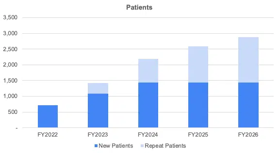
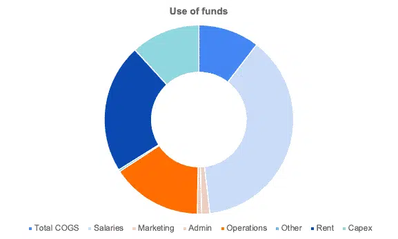

Forecast Patients (Pets)
The first thing you’ll need to do is to forecast the number of patients (pets) you can expect to receive in your veterinary clinic. Naturally, do this month over month. The number of pets is the sum of 2 types of patients:
Patients = New Patients + Repeat Patients
New Patients
These are the new patients who come for the first time. Unless you take over an existing veterinary clinic, the number of new patients will likely be low in the early months and increase progressively.
Repeat Patients
To go a step further, you should forecast repeat patients: the customers who will come back with their pets at least twice in the future.
Repeat patients are very important as they don’t cost you a dime to attract (they come back because of the great care you gave their pet(s) the first time, and not because of some ad you had to pay for). Also, repeat patients are more engaged and therefore likely to spend more (in regular checkups for example).

uses of funds
